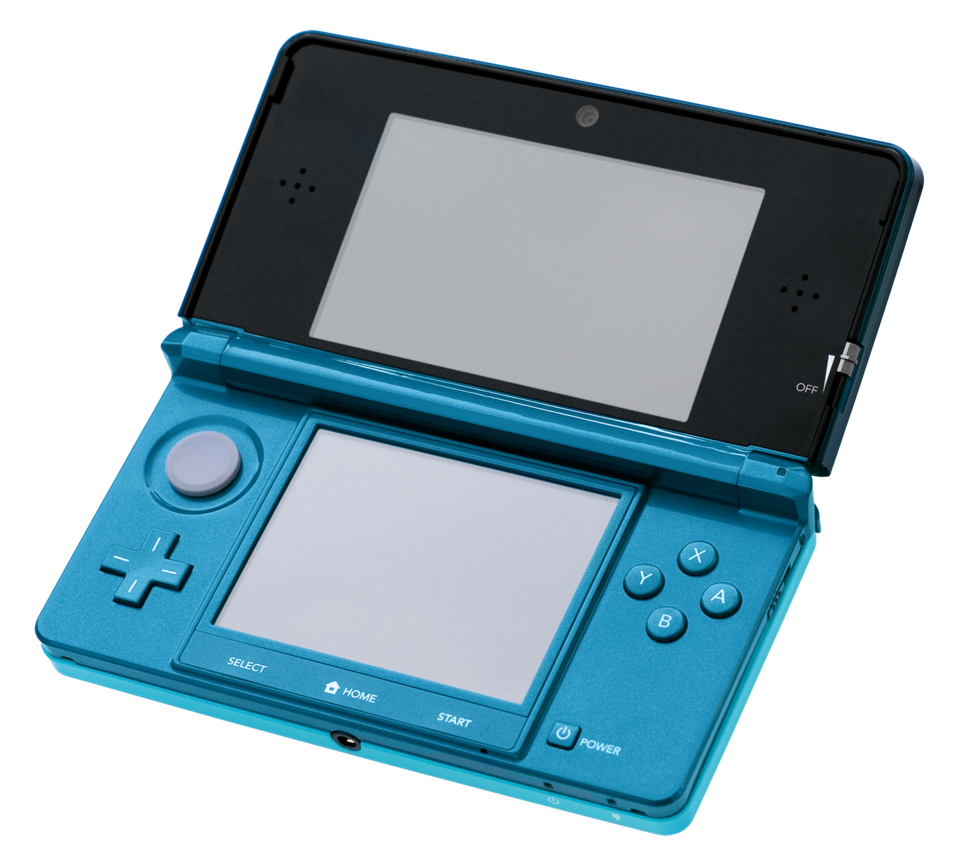
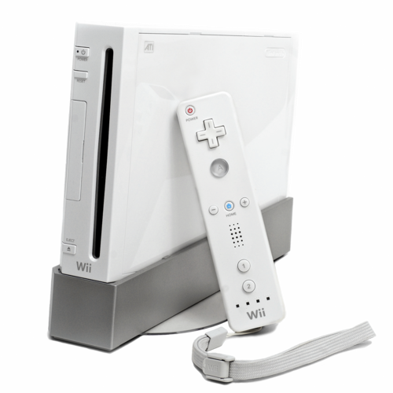
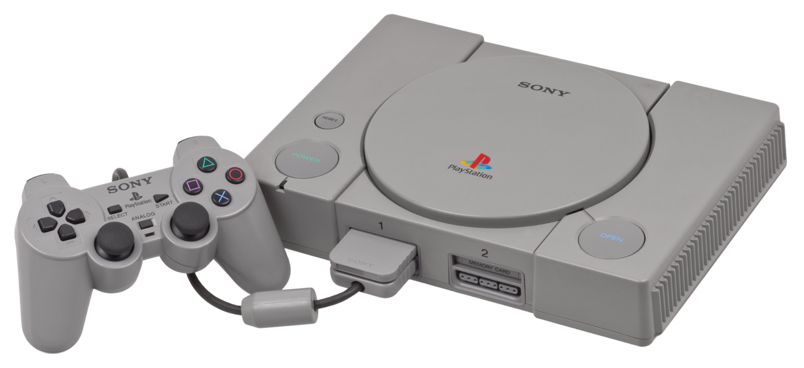
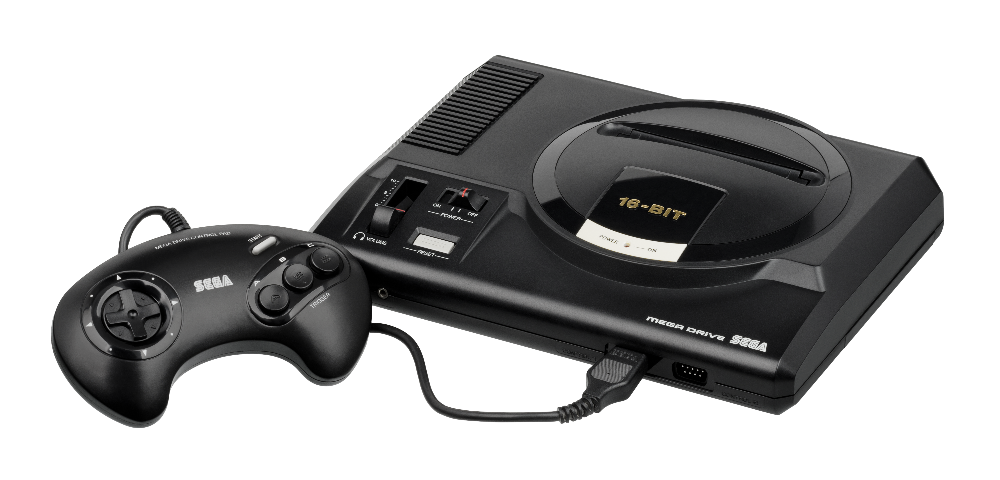
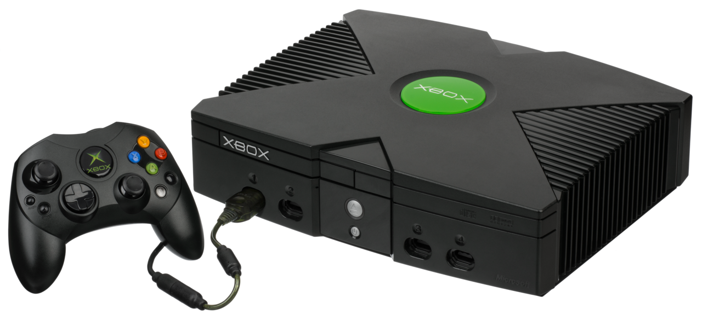

Nintendo DS/3DS
Nintendo Switch/2

Nintendo Wii/Wii U

PlayStation
 Inicio
Inicio
Otras

Xbox es una videoconsola doméstica de 32 bits y la primera de la serie de videoconsolas Xbox fabricada por Microsoft. Salió a la venta como la primera incursión de Microsoft en el mercado de las consolas de videojuegos el 15 de noviembre de 2001 en Norteamérica, seguida de Australia, Europa y Japón en 2002.[1] Está clasificada como consola de sexta generación, iniciada por la Sega Dreamcast de Sega aunque compitiendo principalmente contra la PlayStation 2 de Sony y la GameCube de Nintendo. También fue la primera consola exitosa producida por una empresa estadounidense desde el lanzamiento de la Atari Jaguar en 1993.
Con el lanzamiento de la PlayStation 2, que ofrecía la posibilidad de reproducir CD-ROM y DVD además de juegos, Microsoft empezó a preocuparse de que las videoconsolas pudieran destituir a la computadora personal como dispositivo de entretenimiento para las salas de estar. La consola se anunció en febrero del 2000. Mientras que la mayoría de las consolas de juegos hasta ese momento se construían a partir de componentes de hardware personalizados, la Xbox se construyó a partir de componentes estándar de ordenadores personales, utilizando variaciones de Microsoft Windows y DirectX como sistema operativo para soportar los juegos y la reproducción de medios.
La Xbox era técnicamente más potente que sus rivales, ya que contaba con un procesador Intel Pentium III de 32 bits a 733 MHz y un procesador que podía encontrarse en un PC estándar; y fue la primera consola en incorporar un disco duro interno. La consola también se construyó con soporte directo para conectividad de banda ancha a Internet a través de un puerto Ethernet integrado, y con el lanzamiento de Xbox Live, un servicio pago de juegos en línea, un año después del lanzamiento de la consola, Microsoft se hizo un hueco temprano en los juegos en línea y convirtió a la Xbox en un fuerte competidor en la sexta generación de consolas. La popularidad de títulos de gran éxito como Halo 2 de Bungie Studios contribuyó a la popularidad de los juegos de consola en línea, y en particular de los shooters en primera persona.
La Xbox tuvo un lanzamiento récord en Norteamérica, vendiendo 1,5 millones de unidades antes de finales de 2001, ayudada por la popularidad de uno de los títulos de lanzamiento del sistema: Halo: Combat Evolved, que vendió un millón de unidades en abril de 2002. El sistema llegó a vender un total de 24 millones de unidades en todo el mundo, incluyendo 16 millones en Norteamérica; sin embargo, Microsoft fue incapaz de obtener beneficios constantes con la consola, cuyo precio de fabricación era mucho más caro que su precio de venta al público, a pesar de su popularidad, perdiendo más de 4000 millones de dólares durante su vida comercial. El sistema superó en ventas a la Nintendo GameCube y a la Sega Dreamcast, pero fue superado ampliamente por la PlayStation 2, que ya en 2006 había vendido más de 100 millones de unidades cuando la fabricación de Xbox cesó.[6] También tuvo un rendimiento inferior fuera del mercado occidental; en particular, se vendió mal en Japón debido al gran tamaño de la consola y a la sobreabundancia de juegos comercializados para el público estadounidense en lugar de títulos desarrollados en Japón. La producción del sistema se interrumpió entre 2005 y 2006.
La Xbox fue la primera de una marca continua de consolas de videojuegos desarrollada por Microsoft, siendo sucedida por la Xbox 360; lanzada en 2005, la Xbox One lanzada en 2013 y las consolas Xbox Series X y Series S lanzadas en 2020.
Fuente: Wikipedia
 Nintendo DS/3DS |
Nintendo Switch/2 |
 Nintendo Wii/Wii U |
 PlayStation |
Inicio |
 Otras |